Module 1
Building Blocks of Good Sleep

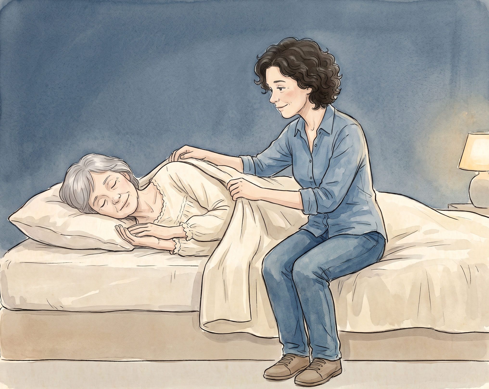
Sleep, we all need it, but why does it sometimes feel effortless and other nights completely impossible?
Sleep isn’t just something that happens passively. Years of research has shown us that sleep is an active, dynamic process that your body and brain work hard to regulate every day.
Over the night our sleep is characterised by 90-minute cycles. These cycles repeat approximately 4-6 times on average.
During these cycles we transition through different sleep stages, including non-rapid eye movement (NREM) and rapid eye movement (REM) sleep. These stages have important functions, such as contributing to memory consolidation and skill learning, as well as “housekeeping” functions that support physical repair, boost immune function, help clear waste products, and support cognitive performance. We also have brief arousals (or awakenings) throughout the night, which normally go unnoticed and are a normal part of sleep.
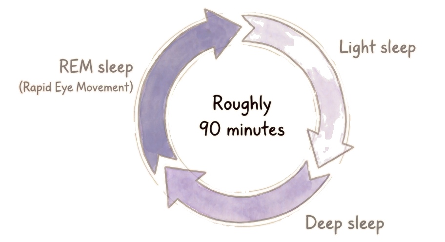
Having said that, being awake for long periods (30 mins or more) or struggling with energy and sleepiness during the day, may be a sign that your sleep could use some support.
You spend the majority of your night in non-rapid eye movement sleep. During NREM sleep our brain waves progressively slow and our bodies relax. NREM sleep involves three stages:
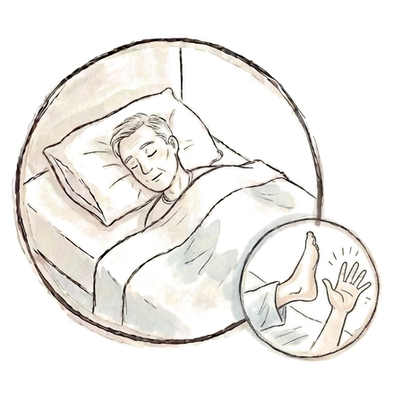
This is the transition from wakefulness to sleep. It’s a brief, light stage where you can be easily awakened. You might also experience sudden muscle movements, “jerks”, or the feeling of falling. These are known as hypnagogic jerks and are completely normal.
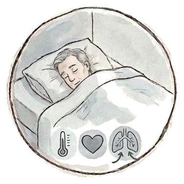
In this stage, we are starting to slow down: our body temperature drops, heart rate slows, and our breathing rate becomes deeper. This stage makes up the largest portion of sleep.
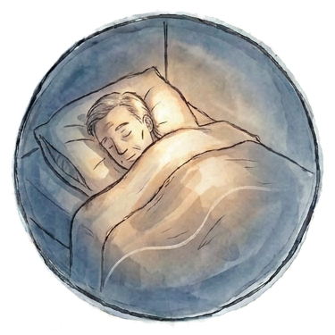
Also known as slow wave sleep, Stage 3 is the deepest, most restorative stage of sleep and supports physical repair and immune functioning.
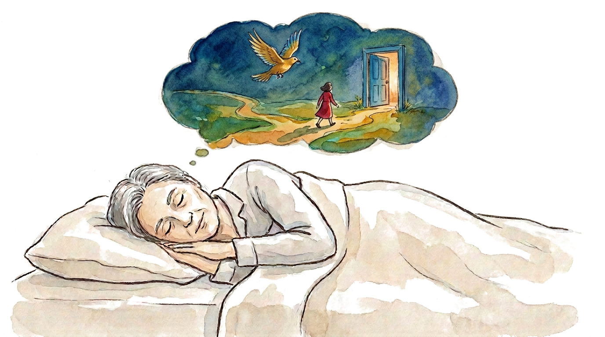
This is the last stage of sleep and is sometimes called “paradoxical sleep”. This is because our brain activity looks very similar to being awake, but our muscles (except for eyes and breathing muscles) are immobilised. This is to prevent us from acting out our dreams, as this is the stage of sleep we are most likely to experience vivid, narrative dreaming in. Our eyes are also performing quick, jerky movements behind our closed eyelids, giving REM sleep its name!
You transition through different sleep stages throughout the night over 90-minute cycles. Awakenings are a normal part of the cycle and usually go unnoticed.
Sleep is essential for restoring energy, supporting memory and learning, regulating mood, and maintaining overall physical health.
Sleep also changes across the lifespan. As we age, the amount of sleep we get may slightly decrease, deep sleep tends to decline, and night-time awakenings can become more frequent. Despite these changes, the need for sleep remains, and maintaining healthy sleep habits is essential at every age.
Understanding how sleep works is the first step toward improving the quality and consistency of your rest.
Changes in sleep are very common in people living with dementia and care partners.
People living with dementia may:
We know that some of the things that impact sleep in people living with dementia are brain changes that directly affect the parts of the brain that regulate sleep. Others may be related to unmet needs or problems, such as pain, health conditions, needing to go to the toilet, and/or depression and anxiety. Some people may even have sleep disorders, such as sleep apnoea and restless legs syndrome.
In care partners, some of the things that impact sleep can be linked to their caregiving role.
These may include:
Care partners may experience stress, anxiety, or guilt, and may have their own physical or mental health concerns, all of which can make it harder to sleep well. Irregular routines or limited opportunities for rest can further affect sleep quality.
It is also important to recognise that care partners may experience sleep difficulties that are not directly related to their caregiving role. Like anyone else, carer partners can have their own sleep challenges due to factors such as personal health, stress, lifestyle, or pre-existing sleep patterns.
What kinds of things impact on your sleep or the sleep of the person you are caring for?
There are different types of sleep issues.
One type is sleep deprivation which is when external things get in the way of you sleeping. For example, needing to go to the toilet, pain, snoring, pets, noise, night-time care, or too much light where you sleep.
Another type of sleep problem is insomnia. This is when you have the chance to sleep but have problems in getting to sleep, staying asleep, or getting up too early in the morning, or a combination of all three.
Insomnia is often related to unhelpful sleep habits and worries, such as worrying about not getting enough sleep, or worrying about whether you can fall asleep.
Sleep deprivation is when something external stops you from getting enough sleep.
Insomnia is when you have the opportunity to sleep but have difficulty doing so.
Thinking about your own experience at the moment, do you think you are experiencing sleep deprivation or insomnia, or a mix of both?
Sleep medications may sometimes be prescribed by a doctor or purchased over the counter at a pharmacy. They can be helpful for short-term insomnia, or in situations where other treatments have not worked.
However, sleep medications generally do not address the underlying factors contributing to sleep difficulties, such as changes in sleep routines, body clock regulation, health conditions, stress, or dementia-related changes. They may also come with side effects, such as next-day drowsiness, falls, confusion, or memory problems, particularly in older adults and people living with dementia.
While they often work quickly, they can become less effective over time, which is why many sleep medications are recommended for short-term use and should be reviewed regularly if used for longer periods.
If you or the person you care for are currently taking sleep medications or are thinking about using them, it is important to discuss this with your doctor or healthcare professional to ensure it is safe and appropriate for your situation. Do not stop taking sleep medications suddenly without medical advice, as some medications need to be reduced gradually under the guidance of a prescriber.
The evidence-based sleep recommendations outlined in these modules can be effective for improving sleep and may be used alongside current medications. These approaches focus on addressing the factors that maintain sleep difficulties and supporting long-term improvements in sleep.
Good sleep depends on a few key ingredients that work together to help you fall asleep and stay asleep. These include building your sleep drive, keeping your body clock in sync, and calming your mind and body before bed.
This is like your hunger for sleep. From the moment you wake, this drive (or hunger) gradually builds, getting stronger the longer you stay awake. The more it builds, the easier it is to fall asleep. Ideally, we want to be very “hungry” for sleep when we get into bed each night!
This is the part of our brain that sends our body signals when it is time to be awake and when it is time to be asleep. Our body clock is mainly regulated by light and keeps us in tune with the outside world.
A busy mind or tense body can make it hard to fall asleep. Relaxing your body and quieting your thoughts before bed makes sleep easier to come.
These three ingredients work together so that sleep is best when we:
Throughout the rest of this program, every strategy is designed to strengthen one or more of these three ingredients. Some strategies help build sleep drive, others strengthen the body clock, while others calm the mind and body. Together, they create the best conditions for healthy sleep.
However, as we highlighted in the pre-module section, we know that sleep challenges and the circumstances surrounding them are unique to each person. As you progress through these modules, some strategies may feel general in nature or not immediately suitable for you or the person you are supporting. We encourage you to discuss how these strategies may be adapted, prioritised, and applied in a way that best fits your individual circumstances, needs, and preferences with your sleep coach. The goal is to find strategies and routines that are realistic and sustainable, rather than aiming for perfection!
As you read in the previous section, Sleep Drive is one of the key ingredients for good sleep.
Sleep drive, also known as homeostatic sleep pressure, is the body’s natural, increasing need for sleep that builds up the longer you remain awake. It works a bit like hunger: the longer you go without food the hungrier you are, and when you eat you feel satiated. For sleep drive, from the moment you wake up your need for sleep slowly increases throughout the day, peaking at night, before decreasing as you sleep.
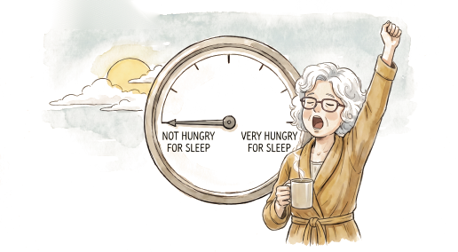
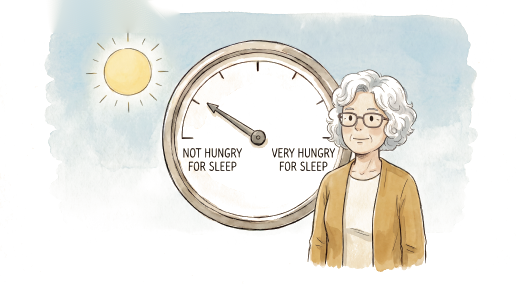
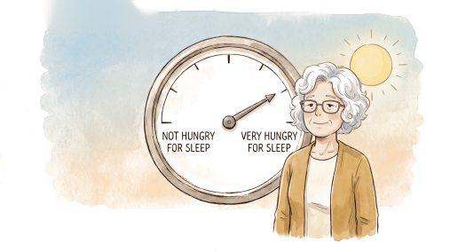
Sleep drive is the body’s natural, increasing need for sleep that builds up the longer you are awake.
Building a strong sleep drive involves protecting your hunger for sleep.
Many factors can affect sleep for people living with dementia and the people who support them at home. These factors can sometimes make it harder to build enough sleep pressure for a good night’s sleep. Strengthening sleep drive is one strategy that may help support a more regular sleep pattern.
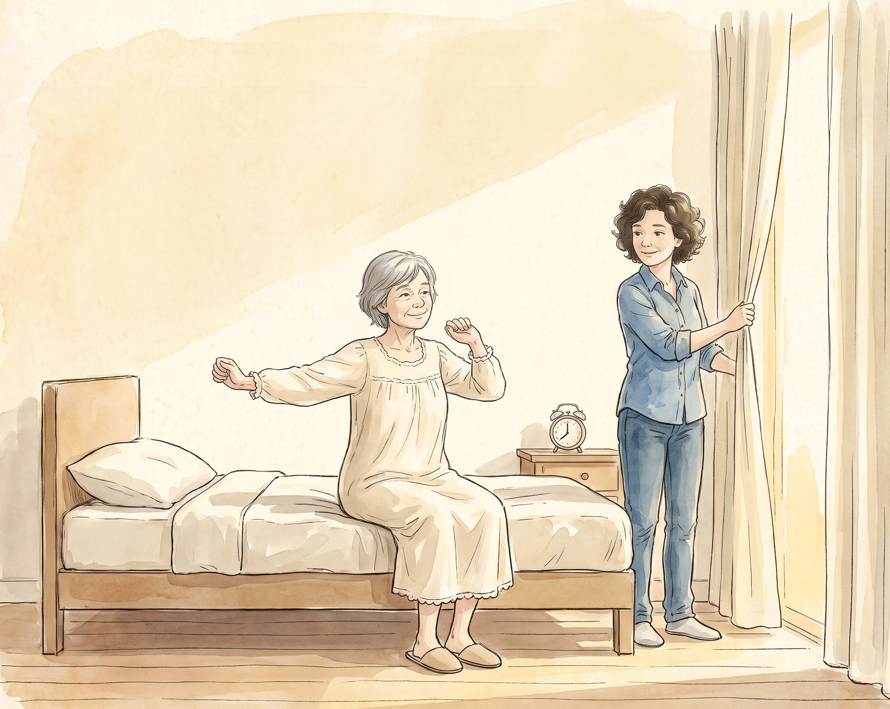
Waking at around the same time each day is the first way to build sleep drive. Here is why it works, and what you can do.
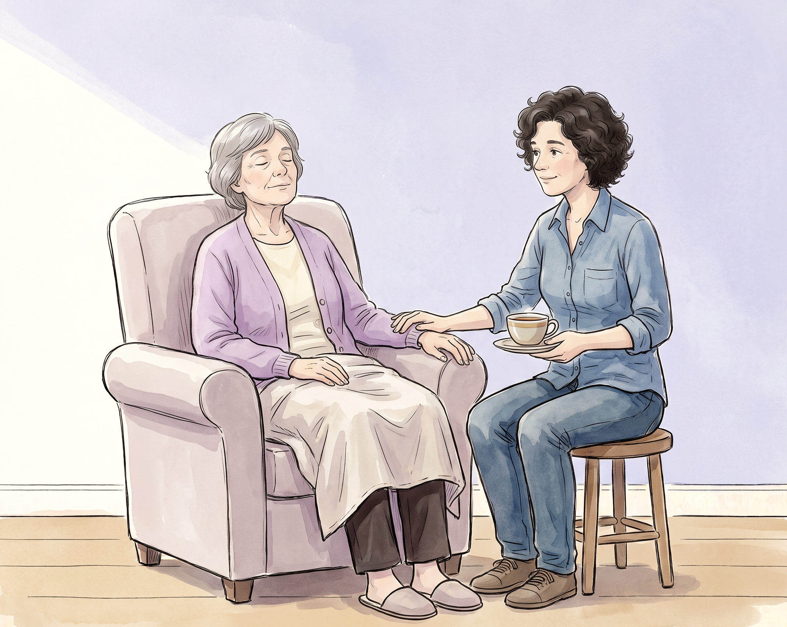
Daytime rest is sometimes necessary. The aim is to protect night-time sleep while still getting the rest you need. Here is why it works, and what you can do.
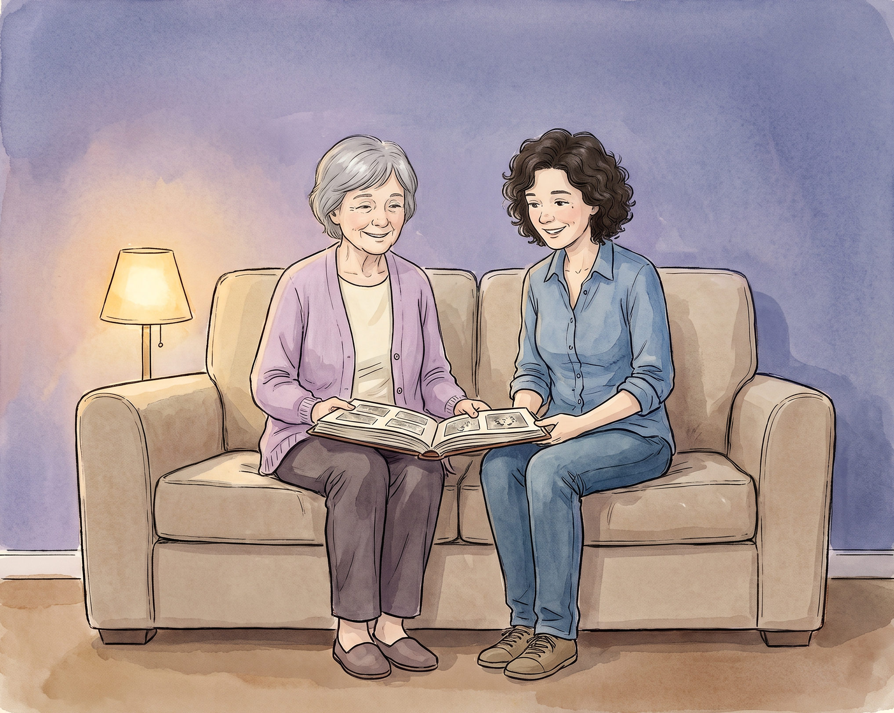
Going to bed early can feel like giving yourself the best chance of sleep. It often does the opposite. Here is why, and what you can do.
Building a strong sleep drive during the day will help your body be ready for sleep when you get into bed.
In this module we discussed the following key strategies:
What are some strategies that you can think of that you could immediately put into place?
Can you think of any barriers that might come about in making these changes? What do you think could be helpful if you come across some of these barriers?
Do you have any questions about the things you have learnt?
What do you think is important for your coach to know about your situation?
Do you have any questions for your coach?
Contact us:
research.team@care2sleep.example.au
Project Partners:


Scan to visit the project website